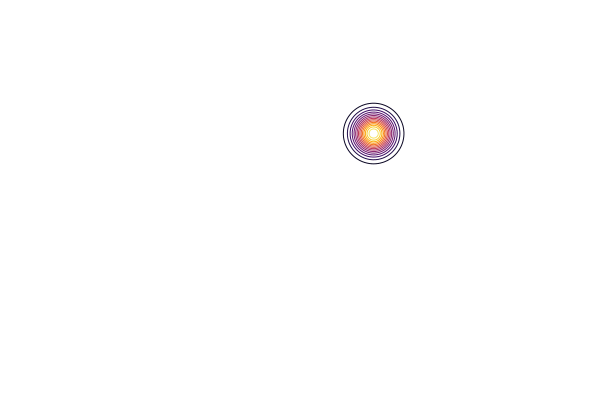

Rotation of a gaussian distribution
\[\frac{df}{dt} + (y \frac{df}{dx} - x \frac{df}{dy}) = 0\]
using Plots
using VlasovSolvers
using FFTW, LinearAlgebra"""
exact(tf, mesh)
Exact solution of the gaussian rotation
"""
function exact!(f, t, x, y)
for (i, xx) in enumerate(x), (j, yy) in enumerate(y)
xn = cos(t)*xx - sin(t)*yy
yn = sin(t)*xx + cos(t)*yy
f[i,j] = exp(-(xn-1)^2/0.1)*exp(-(yn-1)^2/0.1)
end
f
endMain.exact!dev = CPU()
n1, n2 = 256, 256
mesh1 = OneDGrid(dev, n1, -pi, pi)
mesh2 = OneDGrid(dev, n2, -pi, pi)
f = zeros(Float64,(n1,n2))
anim = @animate for t in LinRange(0,20π,200)
exact!(f, t, mesh1.points, mesh2.points)
contour(f, aspect_ratio=:equal, frame=:none, legend=:none)
end[ Info: Saved animation to /home/runner/work/VlasovSolvers.jl/VlasovSolvers.jl/docs/build/assets/rotation.gif
x = mesh1.points
y = mesh2.points
nsteps = 1000
tf = 200 * pi
dt = tf/nsteps
kx = 2π/(mesh1.stop-mesh1.start)*[0:mesh1.len÷2-1;mesh1.len÷2-mesh1.len:-1]
ky = 2π/(mesh2.stop-mesh2.start)*[0:mesh2.len÷2-1;mesh2.len÷2-mesh2.len:-1]
f = zeros(Complex{Float64},(mesh1.len,mesh2.len))
f̂ = similar(f)
fᵗ = zeros(Complex{Float64},(mesh1.len,mesh2.len))
f̂ᵗ = similar(fᵗ)
exky = exp.( 1im*tan(dt/2) .* mesh1.points' .* ky ) |> collect
ekxy = exp.(-1im*sin(dt) .* mesh2.points' .* kx ) |> collect
FFTW.set_num_threads(4)
Px = plan_fft(f, 1, flags=FFTW.PATIENT)
Py = plan_fft(fᵗ, 1, flags=FFTW.PATIENT)
exact!(f, 0.0, mesh1.points, mesh2.points)
for n = 1:nsteps
transpose!(fᵗ,f)
mul!(f̂ᵗ, Py, fᵗ)
f̂ᵗ .= f̂ᵗ .* exky
ldiv!(fᵗ, Py, f̂ᵗ)
transpose!(f,fᵗ)
mul!(f̂, Px, f)
f̂ .= f̂ .* ekxy
ldiv!(f, Px, f̂)
transpose!(fᵗ,f)
mul!(f̂ᵗ, Py, fᵗ)
f̂ᵗ .= f̂ᵗ .* exky
ldiv!(fᵗ, Py, f̂ᵗ)
transpose!(f,fᵗ)
end
test = zeros(mesh1.len, mesh2.len)
exact!(test, tf, mesh1.points, mesh2.points)
println(maximum(abs.(real(f) .- test)))9.744566754751514e-12